Receiving 101
NOTE: All instructions are subject to change. Last updated 03-31-2026 by Kyle Webster
ALL CONTENT IS EDITABLE: double click into text and then hit the "Save" button in the top right corner of the screen to change it. Be sure to save it to the directory the current file is in and replace the old file with this version to overwrite the old one. It will only change the files that you have and not on someone else's computer. If you wish to update their files you will have to send a copy to them. Changes are not tracked so be careful with whatever changes you make will be permanent.
Set Up
- Open Bookware and the receiving tab under inventory (left hand side of the screen ). Other useful tabs are item inquiry and purchasing.
- Switch the Warehouse: drop down menu in the top left to All Warehouses
- Switch the View By: drop down in the top right to PO/Memo #
- Make sure the Status: is set to Open
- Open a web browser with MyWICs (https://mywrs.uwo.ca/wrs/wics) and look at receiving tab
- Other useful windows include a calculator for any math that may need to do and your outlook email in case you need to ask question or inform a buyer of a problem
Creating Memo
- Select an invoice you wish to receive. Locate the PO number on the invoice (or if not there hopefully an internal purchasing order sheet was printed, then reference that PO number). Make sure all the counts for the items are correct. If not you will need to refer to the Short Shipments section of this document and continue from there
- Under the receiving tab in Bookware in the Filter: search bar type in the PO number (you can ignore the S and the 0’s at the start for ex. S00323987 you can just type in 323987)
- Double click the line highlighted in blue (see image below) for your purchase order (the details of the line will be different but that’s alright, they are tailored to that PO number). If no line shows up that is selectable that means there isn’t a PO in the system. Refer to Can’t Find PO later in the document for solutions
- A new window should appear (see image below). From this new window select the New Memo button in the bottom left corner. You can ignore all the information in the window when creating a new memo
- Another window should appear (see image below) after selecting the New Memo button. Fill in this Create Receiving Memo window with the following information:
- Packing Slip #: for all orders you can just put the invoice number in this box except if the invoice is a prepaid visa invoice or if it is consignment you will just put that down for whichever it is. NOTE: This line has a character limit. If you exceed a certain number of characters it will stop collecting characters. That is fine, nothing to worry about
- Invoice #: for all orders put the invoice number listed on the invoice. For special cases like Custom Course Material the invoice number is the book number (ex. M12345) so fill that information in here. For visa invoices, not all have an invoice number. Just find an order number and put that in this box
- Invoice Date: in this selection select the invoice date listed on the invoice. Be careful as a lot of invoices will have multiple dates listed on them. Make sure to get the invoice date and not another one. For special cases like visa invoices, if it doesn’t have an invoice date just put down the order date
- Condition: leave this as EXCELLENT (01). No need to change this
- Carrier: Put the delivery company in this line (ex. Purolator, UPS, Day and Ross, etc.). For special cases like a Product License (any sort of access code invoice) put LICENSE, for any delivered by the Book store Courier put OWN, for any from Permark put BADGES and for any that were Delivered Remotely put DROPSHIP. NOTE: This line has a character limit (6). If you exceed a certain number of characters it will stop collecting characters. That is fine, nothing to worry about
- Reference #: in This field go in to https://mywrs.uwo.ca/wrs/wics/receiving (link should work if you are logged in) and find the matching line to the invoice you are working on. Double click into the Waybill column of the line and copy the waybill number. Paste the waybill number into the Reference # line. For special cases like a Product License (any sort of access code invoice) and for any that were Delivered Remotely putting just the PO# is fine
- Boxes: for this field put the number of boxes that was in the shipment. This can be found on the log (https://mywrs.uwo.ca/wrs/wics/receiving) in the Qty and Received columns for the orders specific line. Put the same number for both input fields in the Boxes: line. For special cases where we don’t see boxes (ex. Licenses, Drop shipments, etc.) just leave as 1 for both boxes
- Once all that information is filled out select Create Memo. NOTE: it is alright if you realize you make a mistake after creating the memo and need to go and revise this information. You are able to do this while in the memo
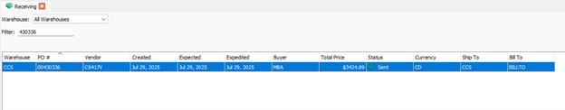
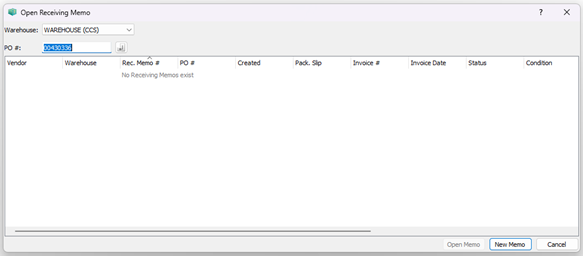
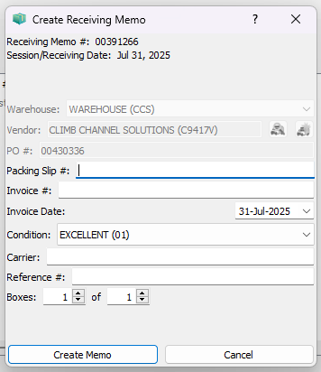
You have successfully created a memo
Updating Invoice Details
If you ever want to update an invoice details for a memo because you made a mistake or got new information, you can do so after creating it. If you select the "Details" button in the top right hand corner of the memo. It will present you with the exact same window you get when you create a memo. From there you are able to update all of the information you entered.
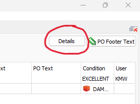
Invoice Stamp
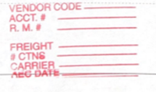
The invoice stamp is the stamp that goes on all the invoices (pictured above). It has information regarding the receiving of the shipment listed on it. It goes on all invoices except Custom Course Material. You should fil this out while creating the receiving memo or right after it has been created as to not forget. To fill it out follow the instructions below.
- VENDOR CODE: On this line you put the 6 digit code for the vendor of the invoice. Found in the top left hand corner of your receiving memo or next to the vendor name in brackets when you are creating the memo. In the example below the code is A9100A (highlighted in yellow)
- ACCT. #: This line you leave blank. This is for the accounts office. Receiving doesn't use this line.
- R.M. #: The Receiving Memo goes here. This is the 7 digit number in the upper left corner of the memo you created or found at the very top of the pop up when creating a memo. In the example below the R.M.# is 00391947 (highlighted in yellow)
- FREIGHT: The FREIGHT is the cost class of the shipment. Put the 3 or 4 digit code here. NOTE: Cost Class can be determined depending on the invoice and other information. Check out Cost Class to help determine which code you need to use
- # CTNS: This is the number of boxes or envelopes that came in the shipment. You should be able to find this number on MyWICS under "Qty" and "Received". NOTE: For ANY invoices where the product is digital or you don't see the number of boxes in the shipment you can just put 1. They won't be in the log to check number of pieces. For SKIDS put the number of boxes on the skid not the number of skids.
- CARRIER: This is the delivery company that delivered the shipment. This will be the as the Carrier from when you were creating a memo. You can reference what you put in that line if you don't remember by going to the upper right hand corner and selecting "Details" (highlighted in pictured below), where you will get a pop up window with the information that you used to create your receiving memo. You are okay to hit cancel after you figured out who the carrier is
- REC DATE: The last line of the stamp is for the date that the shipment came in and was logged. This date can be found in MyWICS in the second last column (circled in the picture below). You can just write the month and day, no need for the year and time it came in. NOTE: For ANY invoices where the invoice is for a digital product or we never get the package in the back door, you can just put the date which you received the invoice. These ones will not be on the log to check for the date
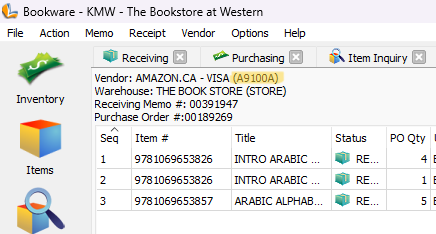
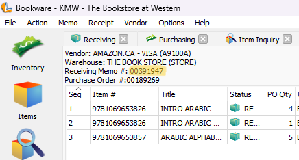
The next 3 lines are usually filled out while the shipment is being counted and checked. You won't always need to fill these next lines in when receiving but the previous lines you will
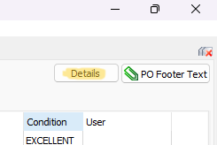
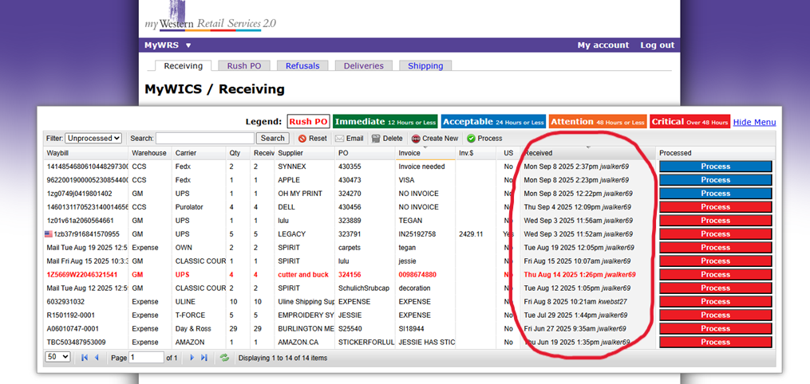
That is all for the stamp. If your invoice is not stamped make sure to add one except in the case of Custom Course Material. The physical stamps can be found at all desks and tables in receiving
The next step is dependent on what you have. Skip ahead to whatever type of product it is that you have. The three possibilities are Books, GM(clothing, drinkware, trinkets, etc.) and Computer Store
Books
- The first thing you will see when you create your memo is a window pop up screen (image below). For books you will always select No to importing from the PO
- The pop up window will disappear and you will be looking at a screen like below. This is your memo. The first thing you will do is right click and select Add Receipt Item from the menu that appears
- There will now be a line on your memo. In the blue highlighted part of the line, in the Item # column you will enter the first book from the invoices ISBN number. You can do this by using a scanner to scan the book. Books that don't have a barcode you will have to manually type in ISBN and print labels for them (Refer to Print Labels for how to do this). Do not use the number that is already populated into the line. It will then populate the row with information about the book. We will cover the parts you need to look at when receiving NOTE: If you get a pop-up window after scanning that says that "This item does not exist on the PO. Do you still wish to receive?" follow instructions from Item Not On PO
- Columns to check:
- Title: Make sure the title of the book you scanned the ISBN for matched what came up in bookware. Titles should be very similar if not word for word the same as what is on the book. This is to verify you have scanned the correct book.
- Rec. Qty: This is the quantity we received. Put the amount that has been counted on the invoice. If the invoice you are working with says 10 and someone has verified we received 10 of that book in good condition then put 10 in the Rec. Qty column. NOTE: If a quantity of books has been marked as damaged, or you have identified some books as damaged, follow Damages for how to proceed.
- Retail: This is the price we are being charged for the book. It can be found on the invoice under price. This price is not discounted yet. A vast majority of books we receive will have a discount.
- Disc %: The discount is the percentage off the price that we get. For course books it is typically 20% and for trade books it typically ranges from 40% - 50%. It will be listed on the invoice under a discount column typically. It can be presented as a decimal or percentage. If the invoice does not have a discount or say something along the lines of "NET" for the discount that means it does not have one and you can leave this line blank.
- Net Unit Cost: You don't have to do anything with this column, it just shows what the price of the item will be after the discount is taken off. You can use it to verify the price and discount you put in are correct.
- Cost Class: The cost class is the shipping of the item. It is a drop down menu of all the options. For the most part you will only use 4 of the classes. CDN1, CDN2, US1, US2. select the one you have determined this invoice you are working on to be. NOTE: Cost Class can be determined depending on the invoice and other information. Check out Cost Class to help determine which code you need to use
- Price Class: For the Price Class and with books, there are 3 options. The first is "MANUAL PRICING(0001)", this is for books you have to determine the price for. If there was no discount or it was less than 20%, you will use this. The second option is "RETAIL LESS DISCOUNT (R)". You will use this on all trade books and any textbook that comes with a price on it. The final option is "RETAIL +2% (R1)". This will be used on any textbook that does not have a discount less than 20% and does not have a price on it. You can go here for detailed flow charts of how to determine book pricing as well.
- Orig. Price and New Price: These two columns are together cause they correlate to each other. You can't change the Orig. Price, it is the current price of the item in the system. The New Price is the price you are setting the item to. If "R" was selected in Price Class, than the New Price should be the same as the Retail.
- Alloc.: This is where a book may be allocated. *NOTE: Special event books (picking list will be marked as for a special event) can stay in boxes in receiving until they are needed for their event. Other orders can go to info desk
- Condition: For the condition this is where you mark a book as damaged if there are damaged copies of a book. To do damages follow Damages for instructions. If there is no damages, leave the Condition as EXCELLENT
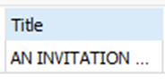
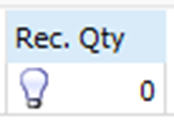
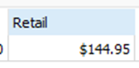
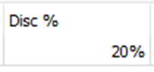
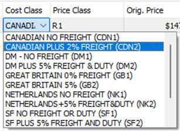
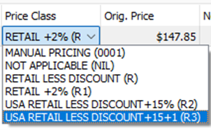
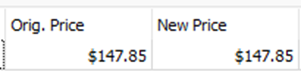
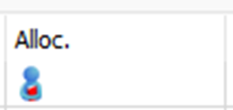
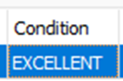
- Repeat steps 2 - 4 for each book listed on the invoice until you have entered the data for every book on the invoice.
- After you have filled out all the information in the required columns, verify that the "Mat:" cost in the bottom left hand corner of bookware matches the subtotal on the invoice. If it is off by a few cents, it is likely okay, just slightly off due to rounding from the invoice. If you are asked to receive an invoice that you are short items on make sure that if you were to have to correct number of items that it would line up with the subtotal on the invoice and then receive what you have. Hold onto the invoice until you receive an actual credit for the short shipment or a revised invoice.**NOTE: Sometimes on invoices companies include the shipping in the subtotal. Make sure to remove this before checking if it matches the "Mat:" cost to make sure numbers are accurate.
- Once all of that is done right click anywhere on the memo and select "Receive All" from the dropdown menu. This will officially put all the items in inventory and will give you a printable copy of the memo. Print it out and staple it to the invoice. Visas go in the top basket hanging from the Computer Store shelf. Custom Course Material invoices go to the course buyers. All other book invoices go in the basket behind Receiver I's desk.
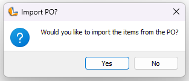
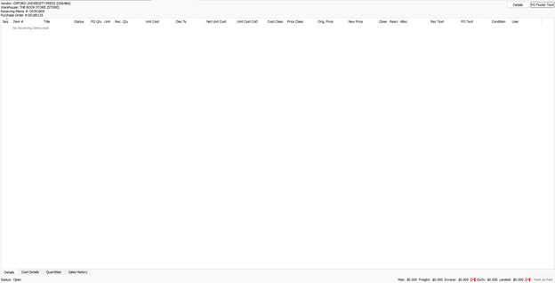
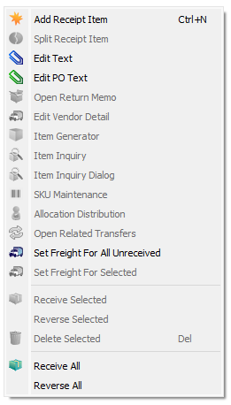
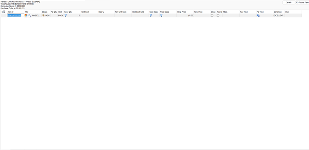
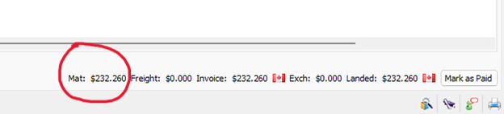
Custom Course Material
Custom Course Material is books made by graphics. They are received differently than normal books as they have a different invoice. There will only ever be on title on an invoice. You do not need to put a receiving stamp on them. Once received all invoice will go to the Course Buyers. You can either hand it to them directly or put it in there shelf that they receive paper in. Below is an example of what a CCM invoice looks like.
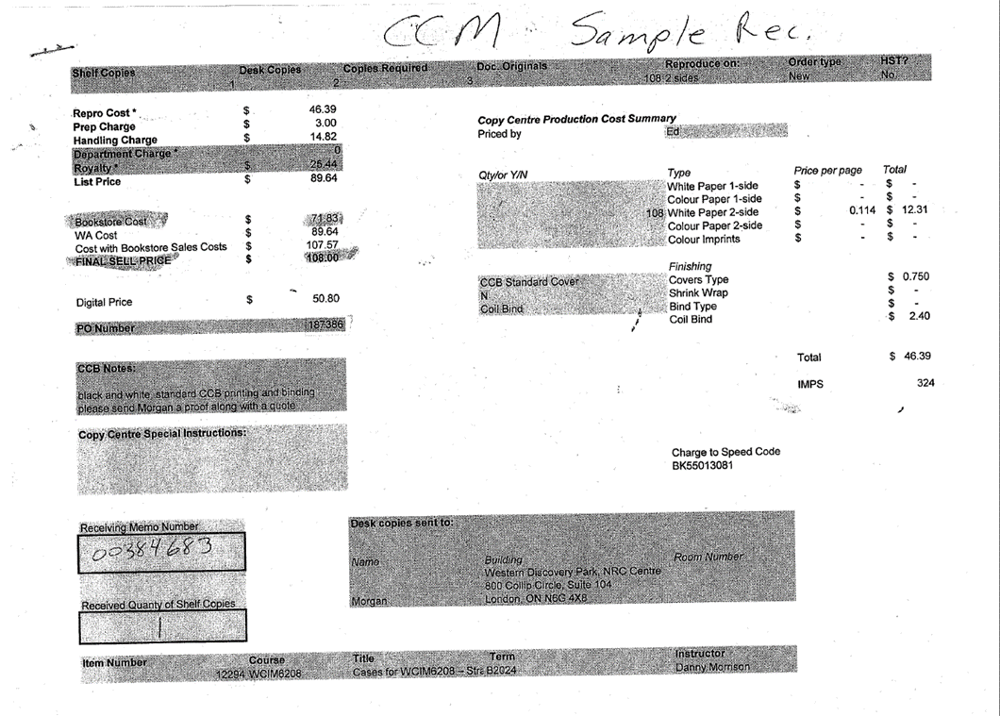
The important parts to pay attention to are listed below:
- Shelf Copies: The Shelf Copies is the total number of books we should have received. When someone counts how many books we got they should match it to this number.
- Bookstore Cost: This is our cost. You will put this in the cost column. CCM books will not have a discount.
- FINAL SELL PRICE: This is the price we sell the book at. Enter this number in the New Price column for the book.
- PO Number: For the PO Number. It uses a typical book number (starting with a 18 number). PO will potentially have more than one book on it, unlike the invoice.
- Receiving Memo Number: This is in place of the typical stamp you put on an invoice. Instead of stamping the invoice you just put the receiving memo number for the memo you created in this box.
- Received Quanty of Shelf Copies: Put the total number of books received in this box. Should match the number of shelf copies from earlier. If it does not, verify with a book buyer that we were supposed to receive all the copies of the book for the store (sometimes graphics holds on to copies as samples the give out and we don't always get them).
- Item Number: The item number is essentially the ISBN for the book. If you put it in item inquiry in bookware, the book will come up. If the barcode on the back of the book doesn't scan you can enter this and the book will populate the new line you are entering.
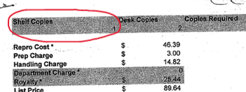
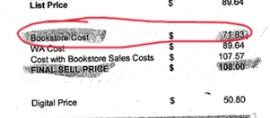
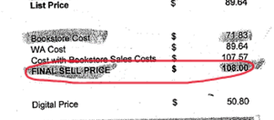
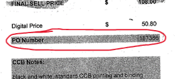
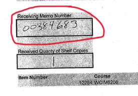
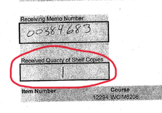
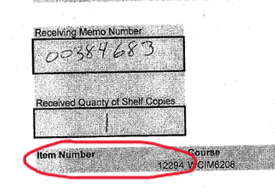
There is no subtotal to match the price up to when receiving so you just have to do the math yourself to make sure you entered the details correctly in the receiving memo. Just use a calculator to verify this.
Final Book Steps
After being received, books can go on a book cart to go out to the floor. Trade books can stand up on their base but lay all course books flat. For course books print 2 shelf labels (how to print labels) and stick them in a copy of the course book and on the cart. Leave them on the paper to be pealed off later.
If there is an allocation make sure to follow the steps under Allocation for what to do with the books when received.
You will also want to process the order from the log. To do so select the big "Process" button on the right hand side of the entry for the matching shipment that you just received.
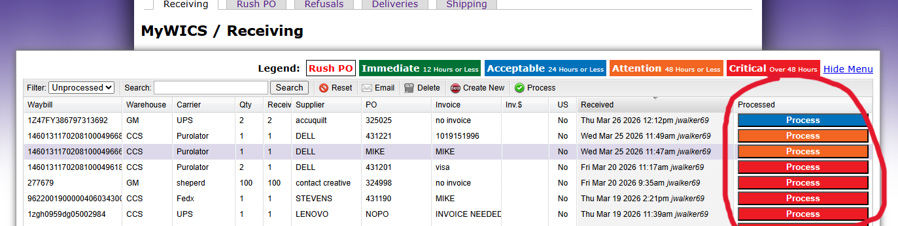
General Merchandise
- The first thing you will see after creating the memo for a GM invoice is a pop up window (pictured below) that prompts you if you would like to import items from PO. For GM memos you select "Yes" unless the GM items are supplies, in which case you can select "Yes" as long as you have verified all of their barcodes scan on a cash register or in bookware. Otherwise select "No" and add a new receipt item for each one and scan to make sure they are in bookware.
- Your memo is now populated with all the items listed on the PO. It is your job to make sure the "Title" (highlighted in the picture below) is an accurate description for the items you have on the invoice. For example, if the title for an item reads "Black Crewneck" but you only have a Purple Hoodie this would be an inaccurate description of the product and be a problem. If you go through all the items listed on the PO and are unable to find anything that matches the "Purple Hoodie" then look to Item Not On PO If it is one of the items listed in the memo then proceed with the next step
- After confirming you product is on the memo, you will go through the below columns and fill out / verify the information is correct. Do not change any columns not specified.
- Rec. Qty: This is the quantity we received. Put the amount that has been counted on the invoice. If the invoice you are working with says 10 and someone has verified we received 10 of that item in good condition then put 10 in the Rec. Qty column. NOTE: If a quantity of items has been marked as damaged, or you have identified some items as damaged, follow Damages for how to proceed.
- Retail: This is the price we are being charged for the item. It can be found on the invoice under price. NOTE: NOT typical for Computer Store items to have discounts percentages. Some will have discounts as total dollars off. Remove this from the price on the item in the Unit Cost when entering it.
- Cost Class: The cost class is the shipping of the item. It is a drop down menu of all the options. For the most part you will only use 4 of the classes. CDN1, CDN2, US1, US2. select the one you have determined this invoice you are working on to be. NOTE: Cost Class can be determined depending on the invoice and other information. Check out Cost Class to help determine which code you need to use
- Price Class: Price class for all GM products should be set to "0001" or "Manual". DO NOT change it to any "R" or other "R" options as this will change the New Price, which should not be changed based on the cost of the item.
- New Price: Make sure that the New Price is reasonable. For Computer Store stuff there is no margin we aim for like with Books or GM, but if the New Price ever seems to low compared to the Unit Cost, verify with the purchaser (who purchased?) that the prices in the system are correct. Use your better judgment on when they seem to low.
- Alloc.: If the blue icon appears in the allocation box, like in the image below, follow the allocation for what to do from here.
- Condition: For the condition this is where you mark an item as damaged if there are damaged items. To do damages follow Damages for instructions. If there is no damages, leave the Condition as EXCELLENT
- Verify all the rows are correct for each column by repeating step 3 for each item.
- After you have filled out all the information in the required columns, verify that the "Mat:" cost in the bottom left hand corner of bookware matches the subtotal on the invoice. If it is off by a few cents, it is likely okay, just slightly off due to rounding from the invoice. If you are asked to receive an invoice that you are short items on make sure that if you were to have to correct number of items that it would line up with the subtotal on the invoice and then receive what you have. Hold onto the invoice until you receive an actual credit for the short shipment or a revised invoice.**NOTE: Sometimes on invoices companies include the shipping in the subtotal. Make sure to remove this before checking if it matches the "Mat:" cost to make sure numbers are accurate.
- Once all of that is done right click anywhere on the memo and select "Receive All" from the dropdown menu. This will officially put all the items in inventory and will give you a printable copy of the memo. Print it out and staple it to the invoice. Visas go in the top basket hanging from the Computer Store shelf. All other invoices go in the basket on Receiver II's desk.
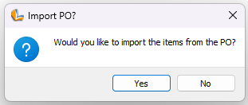
For GM items for the store, if there is room, you are able to bring them to the "Red Sticker Room" which is the very end of the hallway in the backstock area. If there is not room, hold it in the back until there is. If it sits in the back for too long without it being able to go to the Red Sticker Room, ask a GM purchaser if they have a spot for it on the floor they would like it to go to clear up space in the back. For allocations follow allocations for what to do with them.***NOTE: There are a few exceptions to these. Check under Special Cases to make sure you know what to do with them.
You will also want to process the order from the log. To do so select the big "Process" button on the right hand side of the entry for the matching shipment that you just received.
Computer Store
- The first thing you will see after creating the memo for a computer store invoice is a pop up window (pictured below) that prompts you if you would like to import items from PO. For computer store memos you select "Yes"
- Your memo is now populated with all the items listed on the PO. It is your job to make sure the "Title" (highlighted in the picture below) is an accurate description for the items you have on the invoice. For example, if the title for an item reads "Macbook Pro" but you only have a Dell laptop this would be an inaccurate description of the product and be a problem. If you go through all the items listed on the PO and are unable to find anything that matches the "Dell laptop" then look to Item Not On PO If it is one of the items listed in the memo then proceed with the next step
- After confirming you product is on the memo, you will go through the below columns and fill out / verify the information is correct. Do not change any columns not specified.
- Rec. Qty: This is the quantity we received. Put the amount that has been counted on the invoice. If the invoice you are working with says 10 and someone has verified we received 10 of that item in good condition then put 10 in the Rec. Qty column. NOTE: If a quantity of items has been marked as damaged, or you have identified some items as damaged, follow Damages for how to proceed.
- Retail: This is the price we are being charged for the item. It can be found on the invoice under price. NOTE: NOT typical for Computer Store items to have discounts percentages. Some will have discounts as total dollars off. Remove this from the price on the item in the Unit Cost when entering it.
- Cost Class: The cost class is the shipping of the item. It is a drop down menu of all the options. For the most part you will only use 4 of the classes. CDN1, CDN2, US1, US2. select the one you have determined this invoice you are working on to be. NOTE: Cost Class can be determined depending on the invoice and other information. Check out Cost Class to help determine which code you need to use
- New Price: Make sure that the New Price is reasonable. For Computer Store stuff there is no margin we aim for like with Books or GM, but if the New Price ever seems to low compared to the Unit Cost, verify with the purchaser (who purchased?) that the prices in the system are correct. Use your better judgment on when they seem to low.
- Price Class: Price class for all Computer Store products should be set to "0001" or "Manual". DO NOT change it to any "R" or other "R" options as this will change the New Price, which should not be changed based on the cost of the item.
- Alloc.: If the blue icon appears in the allocation box, like in the image below, follow the allocation for what to do from here.
- Condition: For the condition this is where you mark an item as damaged if there are damaged items. To do damages follow Damages for instructions. If there is no damages, leave the Condition as EXCELLENT
- Verify all the rows are correct for each column by repeating step 3 for each item.
- After you have filled out all the information in the required columns, verify that the "Mat:" cost in the bottom left hand corner of bookware matches the subtotal on the invoice. If it is off by a few cents, it is likely okay, just slightly off due to rounding from the invoice. If you are asked to receive an invoice that you are short items on make sure that if you were to have to correct number of items that it would line up with the subtotal on the invoice and then receive what you have. Hold onto the invoice until you receive an actual credit for the short shipment or a revised invoice.**NOTE: Sometimes on invoices companies include the shipping in the subtotal. Make sure to remove this before checking if it matches the "Mat:" cost to make sure numbers are accurate.
- Once all of that is done right click anywhere on the memo and select "Receive All" from the dropdown menu. This will officially put all the items in inventory and will give you a printable copy of the memo. Print it out and staple it to the invoice. Visas go in the top basket hanging from the Computer Store shelf. All other invoices go in the basket on Receiver II's desk.
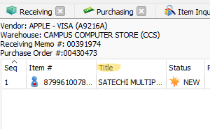
For Computer Store items, once they are all received, majority will be allocated. The items that are not allocated can go to the tech hub where they will be able to store them or keep them. If it is for the store, make sure the products barcode scans, otherwise you will need to print stickers for them.
You will also want to process the order from the log. To do so select the big "Process" button on the right hand side of the entry for the matching shipment that you just received.
Problems That May Arise and Solutions
Short Shipments
GM
For GM, email the purchaser of the product and list the quantities of items short. Hold off on receiving the item until the purchaser gets back to you with how they would like to proceed. For the most part they will likely just be able to get a revised invoice or credit and you can proceed from there.
Books
For books which were short shipped, make a photocopy of the invoice and make sure to mark quantities of book that is short shipped (highlighting what you write is helpful). Bring the copy to the course buyers office and inform them of short shipments and put sheet in basket (there should be a basket where packing slips that need invoices and damage reports go. It is in the same tray where you put this just different level.) You will most likely receive a credit or be informed that the missing copies are being shipped and should arrive shortly.
Computer Store
For computer store product, ask purchaser how they would like to proceed.
Can't Find PO
There could be a couple things going on if you are trying to find a Purchase Order but can not pull it up in either the receiving tab or purchasing tab of bookware. Listed in order of best methods to solve this problem.
- Verify that the PO is not closed. In the top right corner of the bookware receiving or purchasing tab there is a "Status:" option. Switch this to "Closed and retype the PO # into the search bar with "00" at the front. You will need to press enter for it to show up. If it shows up that means that the PO was closed and likely already completed or that the purchaser believed we were not going to be getting the remaining items. If you are receiving items it is okay to go ahead and receive from a closed PO as long as the items truly belong to that PO
- Refresh the purchasing or receiving tab. When a PO is added after you opened the tab it won't appear when you search it up. Just close and reopen the tab and if this was the case it should appear when you try searching it again.
- Check under the vendor for a similar PO number. Sometimes the vendor makes a typo or mistake with the purchase order and puts the wrong number. Switch the tab you are on, "View By:" in the top right hand corner to "Vendor" than look for the vendor the PO you are looking for is from. If there is any open PO's with a similar number, just digits are swapped or there is not many PO's under that vendor, check them to see if the items match. Use your judgment on whether it appears to be the same PO and use that as the PO if you believe it is the same.
- If you have done all of the above and still are unable to find the PO in the system, reach out the the buyers (ie. the book buyers for books, the tech hub buyer for computer store stuff and the GM buyers for any GM items) and ask them if they know what the item is and the PO for it.
Cost Class
Cost Class is determined by how the product was shipped and if we were charged for it. There are 4 main Cost Classes you will use. CDN1, CDN2, US1, US2.
The alphabetical part of the code is based on the country the currency the invoice is being paid in. CDN is for Canadian dollars and US is for American dollars. Most invoices will have this listed somewhere on them, which currency they want to be paid in. If it is not listed, select based on where the invoices is being paid to, an American or Canadian address.
The numerical part of the code is determined based on whether we, the bookstore, pay for shipping. 1 means we did not pay for shipping. 2 means we did pay for shipping.
To determine if we paid for shipping there are a couple things to keep in mind. For Books anything from Day and Ross, UPS or Purolator we paid for, so the numerical part of the code will be 2, unless it says free shipping somewhere on the invoice. Other couriers we do not have a shipping account with so we don't pay collect on them. This means you will have to look at the invoice to see if we were charged for shipping. If we were charged for shipping the numerical part of the code is 2. If we were not charged for shipping the numerical part of the code is 1. For GM it is the exact same as Books. For Computer Store products, we assume free shipping on everything, no matter the courier, and use the code with numerical value 1, unless shipping cost is listed on the invoice, then we use 2.
Attached is a flow chart that can help you determine what class to use:
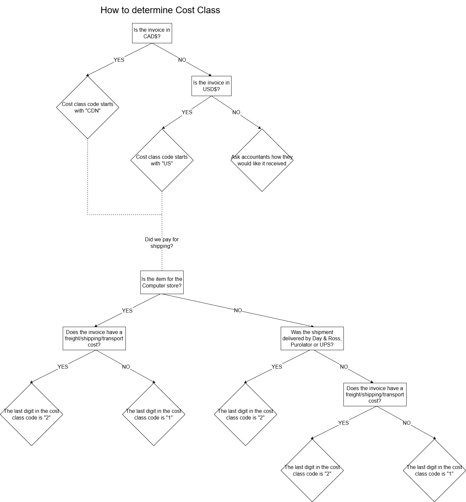
Book Pricing
Below is flow charts for use in determining the sell price of a book. Use them when you are unsure of how a book should be priced.
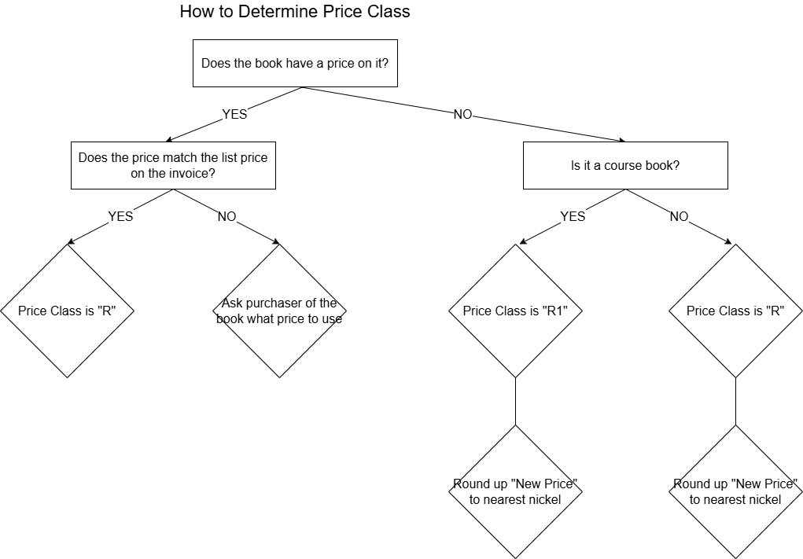
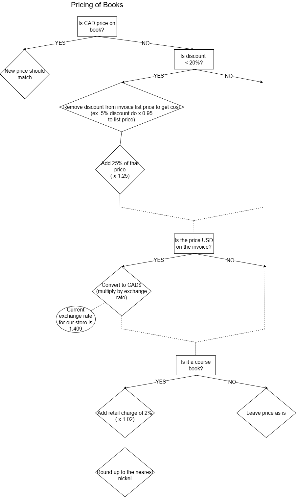
Item Not On PO
This will be what happens when you try to receive an item that is not on the PO:
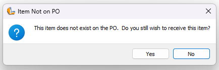
When you are trying to receive and an item won't show up on the receiving memo because either when you scan it it says that the item is not on the PO or when you import items to the purchase order it doesn't show up, follow the steps below.
Verify that on the invoice it is not listed under a different PO. Sometimes invoice will have multiple PO's on them and you will have take care of this. Follow Multiple PO's for how to handle this.
Look up the purchase order page in bookware itself to make sure the item is not on it. If it is there, verify that the ISBN number is correct if it is a book you are trying to scan in. If it is GM or Computer Store items, as long as it doesn't say "Cancelled" in the status column then try closing the memo and reopening to import the items again. If it says "Cancelled" verify with the purchaser that they still want the item. If they do you will have to enter the ISBN manually and select "OK" to adding it to the purchase order.
When you go to receive the item you will receive the original pop up window. Hit okay to proceed. You will have to enter the quantity in both the "PO Qty" column and the "Rec. Qty" column to receive the item.
Another thing to check is to check if the item is in the system under a different PO. To do this you can go to "Item Inquiry" and look for the sku once there.
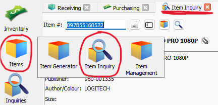
Once there go the the bottom tab and look under "Purchasing". This will show you all the purchase orders for that item. Any open PO's will be indicated by the "Status" column. "CLOSED" will mean that the PO is closed and we have received all the items. The yellow star shape indicates that it is a new PO and yet to be received. If there is one open, that is most likely the one the item is supposed to be on.
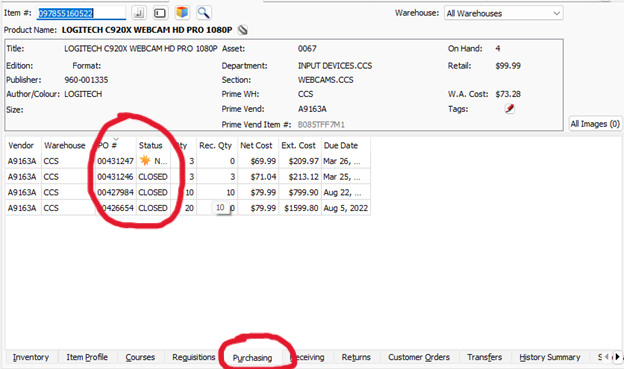
Delete Memo
If you need to delete a memo, because you made an extra or for whatever reason, make sure that if you filled in any lines in the memo that you have deleted them. To actually delete it you will need to have had at least one line in the invoice as well. Once all lines are deleted, you can then go to the top left corner of bookware, select "Memo" and then in the drop down of options select "Delete Receiving Memo". Do not do this with a memo with the status "Closed" (bottom left corner).
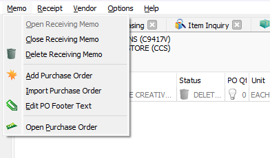
Over Shipments
For any shipments we receive that we get more products than we are invoiced do the following with them
- If the shipment is for an allocation, say we ordered 300, 300 were allocated and we were invoiced for 300 but they sent 301, then do not receive the extra one and just leave it with the allocation order. For majority of allocations they are special order so we are not able to sell them in the store. That is why we just give them to the customer who ordered them for free.
- If it is a product for the store, make two lines for the same product on the invoice (if the quantity is less than the PO quantity you can right click and select "Split Receipt Item" after entering the quantity we were invoiced for to create a new line. If the quantity we were invoiced for matches the PO quantity, drag the item number down of the specified item to create a new line and select "Yes" to still receiving the item even though it is not listed on the PO). Enter the quantity that we received extra of in the "PO Qty" column if required and the rest of the information as you typically would for the product except if it is books, make sure the price class is 0001 and do not update the price. The one difference for all extra product will be that since we are not invoiced for them, put the "Unit Cost" to a penny or $0.01. This will reflect in the "Mat:" cost so keep that in mind when you receive.
OR
For any shipments we receive that we get more products that we ordered and are also invoiced for them, do one of the following options:
- If the shipment is an allocation, ask the purchaser what they want to do with the extra over the allocation because we likely won't be able to sell them on the floor and we can't charger the customer for more than they ordered.
- If the product is for the store, make two lines for the same product by selecting the item number and dragging it down. Select "Yes" to still receiving the item even though it is not listed on the PO. In the new line for the "PO Qty" enter the number of extra you received of that item over the PO quantity and fill in the rest of the information as normal. If it is a large amount of more than what was on the PO quantity, verify with the purchaser that they wish to keep them all.
OR
Multiple PO's
Invoice can have multiple PO's listed on them. Some common vendors who do this are Raincoast, Penguin, and Varsity Collection. Receiving an invoice with multiple PO's is simple following the below steps:
- To start, select one PO and create a memo for it and go through the process of receiving it like you normally would for all the items on that PO listed on the invoice.
- Once you have finished that PO and are ready to move onto the next, verify you have entered all the information properly as it is hard to go back and forth between different PO's on the same memo.
- Make sure you do not have any lines of the receiving memo selected by clicking in the white space below the lines you just entered. In the top left corner of bookware select "Memo" and from the drop down select "Add Purchase Order".
- A new window will appear containing a list of all other open PO's from that vendor. From that list search for the next PO you have on your invoice and select it. Then hit the "Add PO" button to add it to the receiving memo.
If you are unable to find the PO number you are looking for, it means it is likely under a different vendor in our system even though it the PO's you have are on the same invoice from the same vendor. In this situation you have to create another receiving memo for this other PO. On your invoice include both Vendor Codes and Receiving Memo numbers in the invoice stamp. To verify it matches the subtotal on the invoice, add the two or more "Mat:" costs on each memo together and compare that number to the subtotal of the invoice. You do not need to follow the rest of the steps if that is the case.
- Once added you will be prompted to import items for the PO. Follow the steps you normally would to receive whatever item you are receiving to proceed. So if it is GM or Computer Store items, say yes to the import. If it is Books say no to the import and proceed.
- Repeat the above steps as many times as necessary for the amount of PO's on the invoice.
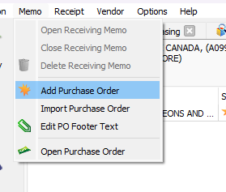
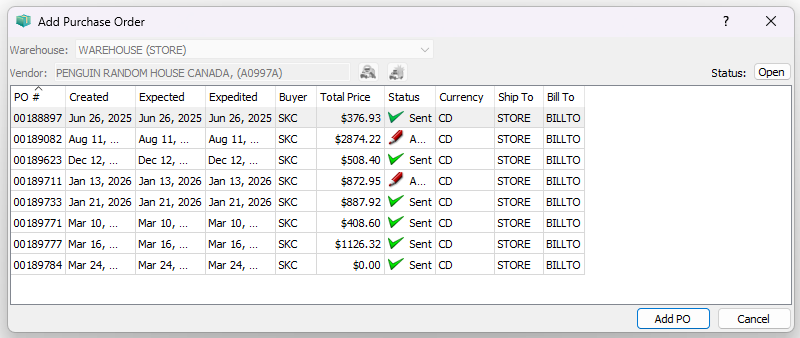
Damages
When you have a damaged product you have to mark it for return. If it is a Computer Store product as how they would like to handle it. If there is extra product that is damaged, ask the purchaser how to proceed with them. Most likely they can just be thrown out. For damaged books and GM do as follows:
- First thing to do is when you are receiving the product, when you enter the "Rec. Qty" only enter the number of products you received in good condition. Exclude the damaged ones from that total.
- Right click that same line and select "Split Receipt Item" which should be second from the top. It will create a new line with the same product.
- In this new line fill in the "Rec. Qty" total with the number of damaged products you received and make sure the rest of the information matches the invoice.
- Once all the information is filled out, under the "Condition" column is where you will make a change. Switch the condition from "Excellent" to "Damaged Return for Credit" with the red box next to it (pictured below).
- The product is now marked as damaged and will be ready for a return. Once you have received the invoice you will need to print the Damage Report. This is done by going to the top left hand corner of bookware, under "File" and selecting "Print Auto-Return Report" while still on the receiving memo you received the damage item on.
- For GM products let the full-time shipper know that the item is to be returned and leave the product and the auto return sheet on the shelf. For course books, mark the auto return report in the top right corner with what shelf that you are putting the books on (ex. 1A, 1B. they are labeled) and bring the sheet to the course buyers shelf. They have a slot specifically for damage reports that you can put this. For trade books do the same as course books except the damage report goes in the bottom basket hanging from the return shelf.
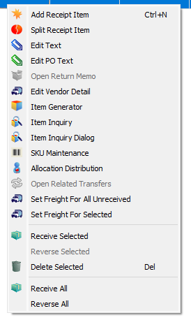
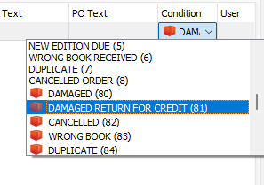
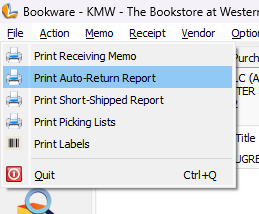
Wrong Product
When you believe you have the wrong product, make sure you verify that it is not something we ordered by going through the steps in items not on the PO first.
Once verified, the process is very similar to doing damages. Check with whoever purchased the original items it was supposed to be that they don't actually want it still, even if it is the incorrect item.
Ask the purchaser to add the item to the system. Once it is added you will have to then import it to the PO and receiving memo. To fill out the information for it go based on how we were invoiced for it on the invoice. If we were invoiced for the item as it is then use that information to fill out the receiving memo. If it is the wrong product from the invoice then use the details from the product that we were invoiced for to fill out the memo information.
Once you have filled out the line in the receiving memo, in the "Condition" column change it from "Excellent" to "Wrong Book" or "Wrong Item".
The product is now marked as wrong item and will be ready for a return. Once you have received the invoice you will need to print the Return Report. This is done by going to the top left hand corner of bookware, under "File" and selecting "Print Auto-Return Report" while still on the receiving memo you received the wrong item on.
All products and the Return Report can then be brought to the shipper for them to get credit and send it back.
How To Print Labels
You will need to print labels for items when they do not have barcodes, the barcodes they do have don't scan or you will need to print specific shelf labels for course books. If it is a GM product that has a barcode that doesn't scan and there is a large amount of them, ask the purchaser if they are able to add the sku for that item into the system.
To start printing labels, go over to the left hand side of bookware and select "Print Labels". A new window will pop up (pictured below). You will then need to add the items you want to create barcodes for. You can do this by selecting the items numbers and dragging them into the new window or scanning the same barcode you want to print (if you had already printed some or had an item that needed a replacement barcode) after selecting "New Item" in the bottom right of the window. From there there is a few different steps to follow based on the type of labels you want.
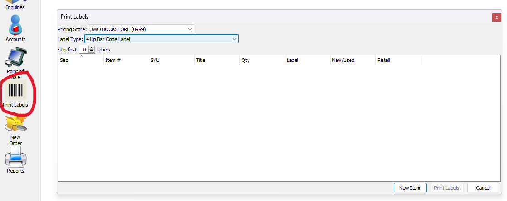
Items that need new barcodes make sure that the "Label Type" is set to "4 Up Bar Code Label" in the top left. Set the quantity to the amount of barcodes that you need and make sure that the "Label" for each item you want to print barcodes for is set to "Item Labels with Price" for all GM and Computer Store items and "Item Labels & 0 Shelf Labels" for all books unless told otherwise.
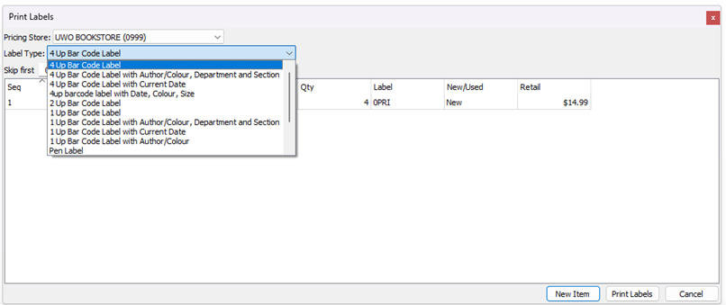
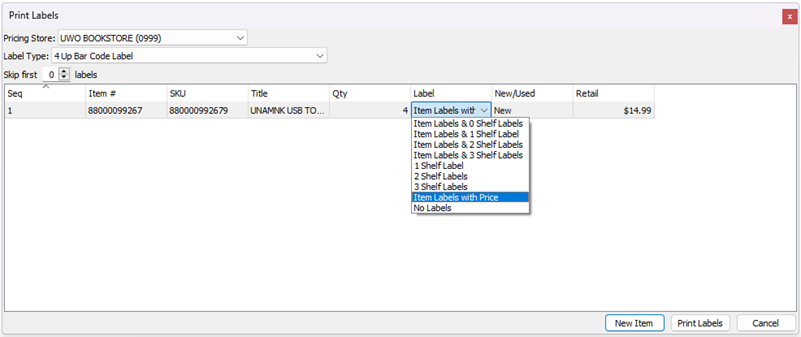
Books that need shelf labels set the "Label Type" to "4UpBar Code Label with Author/Colour, Department and Section" and the "Label" for each line you want shelf labels for is set to "2 Shelf Labels". Entering the quantity does not matter as it will always only print 2 shelf labels.
***NOTE: The "Label" column will display a short form for whatever type you selected. No need to worry if it does not match the option you selected from the dropdown.
You are then free to hit "Print" in the bottom right hand corner. You need to make sure there is labels in the printer. For book labels use the sticker sheets that have a strip of empty space down the middle, as they come off more easily for when we return books. For GM and Computer Store items, use the sticker sheets that have Uline logos on the back of the sheets. They stick better to products and are not as easy to remove.
For the "Print Preview" settings, currently the best to have them at are a "Horizontal Offset:" of -14 and a "Vertical Offset:" of -10 to make the labels fit properly on the page and individual stickers. These values may change and you may have to play around with it if a new printer is acquired or a new computer or software is being used. Once verified you can hit "Print" in the bottom right.
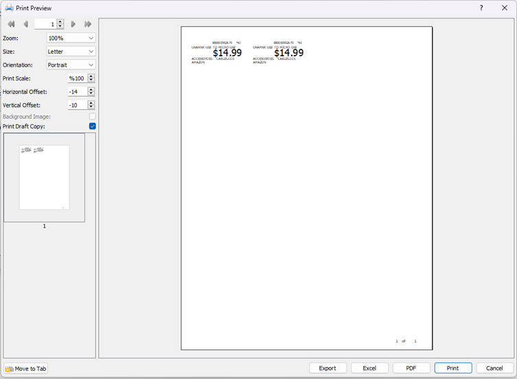
To use the tray that has sticker sheets loaded, it does not automatically pull from it. You need to select it manually in the printer settings. From the second print preview screen you will need to go into "More Settings".
From the "Printing Preferences" page select the "Paper/Finishing" tab at the top (pictured below)
Change the "Paper source/tray:" option to "Multipurpose Feeder" and if you haven't already, you are then able to save those settings to use again later by hitting the "Save..." button in the bottom right.
The final steps are to hit "Ok" and "Print" and grab the pages from the printer. You have successfully printed labels.
Who Purchased these Item's?
To determine who purchased the PO you are currently working with you are going to want to go into the "Purchasing" tab in bookware. From there look up the PO number by making sure the "View By:" drop down menu in the top right is set to "PO" and that the "Warehouse:" drop down menu in the top left is set to the correct warehouse of the purchasing order or "All Warehouses" and typing in the PO number into the "Filter:" text box. Once that information has been filled out in the text box your screen should look like the image below.
The purchaser of the item will be the purchaser who's initials are in the "Buyer" column. In the image above the purchaser is the staff member with the initials "JMK".
Receiving with a Credit
To receive an invoice which you have a credit with, subtract the total value of the credit from the total value of the invoice and make sure that that final cost matches the "Mat:" cost (pictured below) on your receiving memo. It should if everything is filled out properly.
Printing Paperwork
If for some reason you need to print any paperwork again for whatever reason, follow the below instructions. ***NOTE: This is only for internal paperwork. Any external paperwork you need printed like invoices you will either need to ask the purchaser or on of the accounting or shipping/receiving managers.
While on the receiving memo, go to the top left hand corner of bookware and select file. If you need a new copy of the receiving memo select "Print Receiving Memo". This will print the memo the exact same as when you received it. Only print once items are received. To print the damage report, select "Print Auto-Return Report". To print all the picking lists for that receiving memo select "Print Picking Lists". All the picking lists should be printed when you go to receive the items.
If you want to print the purchase order paperwork, look up the PO under the "Purchasing" tab and open the PO. In the top left under "File" select "Print Internal Purchase Order"
Special Vendor Cases
Permark
Permark is different as the bookstore does a "Release Program" where we receive the product before we get it and they will ship the product to us as needed with specific customization. So receiving it is a little different.
- Sometimes you will receive a package from Permark with the first release and an invoice. Other times you will just receive the invoice and not have any of the name badges yet. Receiving it is still the same regardless. You can create a memo as per usual
- To get the Unit Cost for each badge you have to calculate it using the engraving rate and it's discount plus the magnet rate and it's discount plus the release program rate and it's discount
- For invoices that arrive with shipments there will be a lower quantity in the release program line. To calculate the rate and it's discount you will have to just use the amount and divide it by the number of name badges on the total invoice
- For example in the invoice below the calculation for the rate of each badge would be (5.99 * 0.6) + (1.7 * 0.7) + (1235.2 / 800) = 6.328
- After receiving Permark make a photo copy of the invoice, three-hole punch and put it in the "Release Program Permark" binder. This is how we keep track of all the name badges as they come in. Put them in order of the RELEASE PROGRAM # (on the above invoice it is the last line under description, the #2975-02BB number)
- When we receive a shipment of Permark badges in the door it will have a label on it (look in the binder for a reference as to what they look like). Make sure the counts are correct and then staple the label to the corresponding invoice. You can match it to the RELEASE PROGRAM #. The invoices should be in order based on the RELEASE PROGRAM #
Lululemon
For Lululemon damages the one main difference is how damages or short shipments are done. For Lulu they have a form to fill out here. Fill out the information on the page and complete the required excel form. Submit the excel form and photos if you are submitting a request for damages. Wait to receive the item until there is confirmation that you are getting credit for them or a GM buyer would like them received to sell them on the floor.
All the information to fill out the excel sheets can be found on the invoices
Lululemon commonly short ships us as they invoice us before they send the product and then if any of the embroidery or printing on the product is no good or they mess it up they don't send it.
Below are examples of filled out excel sheets
Damage Report
Short Ship Report
Jellycat
With Jellycat watch for the "MAP" on the invoice and what our sell price is in the system for the products. These two prices should match. If not than match the sell price to the MAP.
A lot of Jellycat have a specific on sale date. Bring them to the GM purchasers office as they are not able to go right to the floor.
Cardinal Health
When you need to set a price for this item because there is not one in the system, use a markup of 1.1892.
***If our cost is $10.00 for a product, multiply that by the markup (1.1892) to get our new sell price which would be $11.90 (round up to nearest nickel)***
Login
Login books occasionally have a set return deadline (pictured and circled below what it looks like on an invoice). For these the Shipper likes to make note of when that deadline is for those books. So after receiving Login books as normal, bring either a copy of the invoice or the packing slip, as it also has the required information, with the date that the book can be returned highlighted, and give it to them.
Imagewear
Imagewear can received like any other GM normally. Of note, it is always a VISA payment invoice. The product does not go to the floor though. All Imagewear product is typically uniforms, unless told otherwise. That means that if there is any sort of shirts in the shipment, they will be held back for decoration. Any sort of pants can go directly to the full-timer who organizes and distributes facility management uniforms. If the picking list says it is for Facility Management then you do not need to print it as it is usually a long picking list.
Logging in Shipments
Logging is the first thing done when any shipment comes in the door. All shipments from any courier are put on the log. You can find the log here, MyWICS. Logging is an important part of the process as it keeps track of what we have that needs to be done and what has come through our receiving doors.
Below is what the webpage looks like and instructions on how to log items
- The first task to do is to create a new line when you have a package you want to log in. Hit the "Create New" button as displayed in picture below
- Waybill: In this input you will put the tracking number of the shipment. Scan the barcode from the package with the tracking number to avoid typing it. Some barcodes will not always scan so you may have to manually enter the waybill number. Some shipments come without labels like shipments from Classic Courier or the Bookstore driver. Here you can just type in "mail" and it will auto populate the way bill with information on the time and date when you move to the next input box.
- Warehouse: This dropdown menu is where you input what warehouse the items are a part of. Any books will go under "Store", any tech products like computers and cables and such will go under "CCS", any products that are used for the store and not to be sold like boxes for shipping or fixtures go under "Expense" and the rest will go under "GM". To identify what the product is you can use the Purchase Order number which should be listed somewhere on the outside of the box, or simply open the package to see what is inside. 6 digit Purchase Order numbers that start with 1 are currently books, 3 is GM and 4 is CCS. An expense Purchase Order number will be less than 6 digits and start with an S2.
- Carrier: Who delivered this shipment. Thats what you put in this field. For example: Fedex, UPS, Purolator are all possible carriers.
- Qty: This is the quantity of parcels in the shipment, the "1 of ___" part of a shipment. Usually found in a corner of the waybill. Put the total number of pieces that are supposed to be a part of the shipment. For skids that come in put the total number of boxes that are supposed to be on the skid/skids
- Received: This is the number of parcels actually received. Sometimes not all parts make it for shipments with more than one package. We mark this in the log buy putting the number of parts we actually received in this column.
- Supplier: The supplier is the company who sold sent the shipment to us or sold us the product. You put the vendor name in here. You can find it usually in the top left of the way bill or you can look up the PO number and reference that or use a packing slip in/attached to the box. An invoice from in the filing cabinet will also have a supplier name.
- PO: We put our internal Purchase Order number here. To find the PO number to start look at the package. It is likely listed somewhere on the package, either on the way bill or written somewhere on the outside. If you are unable to find it on the package it should be on a packing slip. If you are still unable to find it use Bookware and Item Inquiry to look up the item in the shipment and find the next PO that is open for that item. That will be the number you put in this line. If you are still unable to find one in the system just put "No PO" in this input line.
- Invoice: For the Invoice number, using the vendor name open the invoice filing cabinet and look under the product warehouse section for the file that matches alphabetically with the vendors name. Go into that file and look for an invoice from that vendor that matches the PO number for that shipment. If you are unable to find one than make sure that there is not an invoice on or in the box. If you are still unable to find one with the package than just put "No Invoice" in this input. An invoice likely just has not been sent yet for this item. ***NOTE: Expense invoices are in the bottom drawer and come with a yellow sheet. Pull both out for the shipment
- Inv.$: This line is only used if the invoice is billed in USD. If it is, put the total of the invoice in this input, else leave it blank.
- US: This is to say whether the invoice is in USD or not. If it is switch the dropdown to "Yes" otherwise you can just leave it at the preset of "No"
A new line will appear. To fully log a package you will have to fill out all this information.
Once you have entered all the above information you can hit "Save" and you will have logged the shipment. Place the invoice inside the parcel or with it. Computer Store items go on designated shelf by logging computer. GM and Books can go on black skids at the end of the center work station.
Returns
We sometimes receive parcels back that are returns. In this instance we log them in differently than a normal shipment. There is another tab on MyWICS called Refusals. This is where returns go. Below is the process to log them.
- The first step to logging a return in is to select "Create New" from the Refusals tab pictured above.
- Reference: This is where you scan the waybill number in. If you are unable to scan it, type it manually.
- Web Order: Web Order is the order number that we sent out. When it is a return from a book publisher, this will be our return memo number. When it is a return from a customer this will be the web order number, usually starts with "WEB00". You can typically find these numbers either on the waybill or you may have to open the package and look for a packing slip.
- Carrier: The company through which the package was delivered. Purolator, UPS, Fedex for example.
- Delivery Location: This is where it was dropped off in the store. We always put "Web Desk" for anything that comes to us through the back door.
- Date Received Pretty self explanatory. The date to which the package was received. Usually auto populates with the current date.
- Quantity: The number of packages in the shipment. For the most part, returns are normally only 1 piece. Rare to see multiple pieces for a return.
- Customer: This is who the items originally went to. For a book return, this will be the publisher. For a customer order, this will be the customers name. Should be able to be found on the waybill. If not, look for packing slip with name on it.
- Customer Address: This line is where it was shipped from. Sometimes it will just have been undeliverable by the courier. In that case open the package to find packing slip and put the original customers address. Make sure to include full address, including postal code.
- After all the above information has been filled out, click into a box that is not "Customer Address" and press enter on the keyboard. This will officially log it and the package will go either to the staff member who processes web orders if it is a web orders return or to the shipper if it is one of our returns that is being sent back.
Allocation
An item allocation means that the item you are receiving is a special order for a customer and does not need to be tagged or sent to the floor. Items that are for allocation are for the most part very obvious to spot as they won't look like anything we have on the floor and would typically stock.
In bookware when you are receiving a little blue and red icon (pictured below) will appear next to the "Item #" and in the "Alloc." column on the memo to indicate that the item has an allocation.
If an item looks like it should have been allocated (use your judgment on this) for example there is multiple sweaters without anything on them, but there is no allocation in bookware when you go to receive, check with the purchaser of the item (if you don't know how to check that look here) to make sure they didn't forget to add an allocation for the item and verify it is for stock.
Below are the steps to allocate an item:
- First is to make sure it is allocated using the above indications on allocated items.
- Verifying it is allocated, right click the item in the memo you want to allocate and the following menu should appear. Click the "Allocation Distribution" option. If it is not a selectable option, make sure that you have filled out the quantity in the "Rec. Qty" and try again.
- A new window will appear (picture below). This will display all of the allocations for this item. You will want to allocate the item. If there is more than one allocation listed, pick the oldest one based on the "Req. Date". If there is multiple with the same date then it doesn't matter which is selected.
- Knowing which order you want to allocate the item to, double click the 0 value in the "Dist. Qty" column and it should auto fill the required amount for the allocation.
- If based on the "Alloc. Qty" and the "Rec. Qty" you still have more in the "Rec. Qty" than the "Alloc. Qty" and there is more than one allocation, keep filling them out until you have allocated all the items you have received. If there is still extra after that ask the purchaser what they would like to do with the remaining items.
- Click "Apply" then "OK" to finish allocating and close the window.
- After finishing and receiving the memo, you will be prompted to print the picking list of the items. If they say they are for "Delivery" or "Del" then print 2 copies of the picking list. One goes on the box with a "Hold for Invoice" stamp. The other goes to the purchaser. If it is not for delivery than print only one copy and bring picking list and item to purchaser for further instructions on what to do with item. NOTE: Items we receive for Facilities Management does not need the picking list printed as the person who organizes it will know what items go with what.
- Some orders will need to be separated and have multiple picking lists. That's okay and totally normal. Divide them up and bring the picking lists to the correct purchaser. If they are books for a special event they you will likely have been notified somehow that they are coming. Leave them in the boxes and leave them in the receiving area with a picking list. You don't need to do any more with them.
- Items For delivery can go on the back delivery shelf. If they are too large for delivery and are on a skid, they can stay on a skid in a bay.
Inventory
Inventory is performed once a year in one of the first weeks of April. The main responsibilities of the receiving team for inventory are counting and double checking the day of (which you will be instructed on how to do that the day of) and keeping a binder for pre-counts.
Pre-count Binder
This binder contains all the pre-counts for the entire store. It sits on the top shelf behind Receiver I's desk. The previous years binder is held on to as an example and to help verify where items are (assuming they are not moved) and their counts.
The receiving teams job for the pre-count binder is to pre-count all the items in the back. This will include the skids in the rafters and the items on the delivery shelf as well as any product that has been received and is still in the back. For the skids in the rafters, since they are not touched as frequently, feel free to get this done well before inventory and then just make note of changes if you need to pull product from them. For any skids that are on the ground and received and the delivery shelf, count them closer to the day of inventory and then make notes of changes when they happen, since these locations are easier for people to pull from without the receiving team noticing, a pre-count could get messed up if you do it too soon on these.
The rafters are labeled by bay from 1 to 7 and the level is from A to C. Bay 1 is the bay of shelves of rafters closes to the stairs to the mezzanine and the receiving door. Each bay is from one set of the orange support bars to the next. The order goes around the receiving bays until the last one next to Receiver I's desk, number 7. The Shelves from top to bottom are labeled as A, B, and C. When pre-counting items, print labels for them and stick them on the outside of the skids to indicate that they have been pre-counted. Make a copy of all the labels on a skid and put that copy in the pre-count binder, with the count of items and location indicated.
Daily Tasks
- Golf Cart: Charged every Monday and Thursday, or as needed. Make sure tires aren't flat. Reverse into bookstore every night and park next to lift in the morning.
- Forklift: Charged every Friday. Make sure light in battery is blinking green. If it is blinking red, refill the water. If it is not blinking at all, talk to manager. Do safety inspection checklist.
- Electric Pump Truck: Charge when down to one green tick. Plugs into wall from cord in top. Really have to pull on top to get it off.
- Deliver Received Invoice: Take the two day old Book invoices and the invoices from the day before for GM, CCS and all Visas up the accounts office first thing in the morning. There are baskets on the wall outside labeled "Visa" and "Invoices". Put invoices in correctly labeled basket.